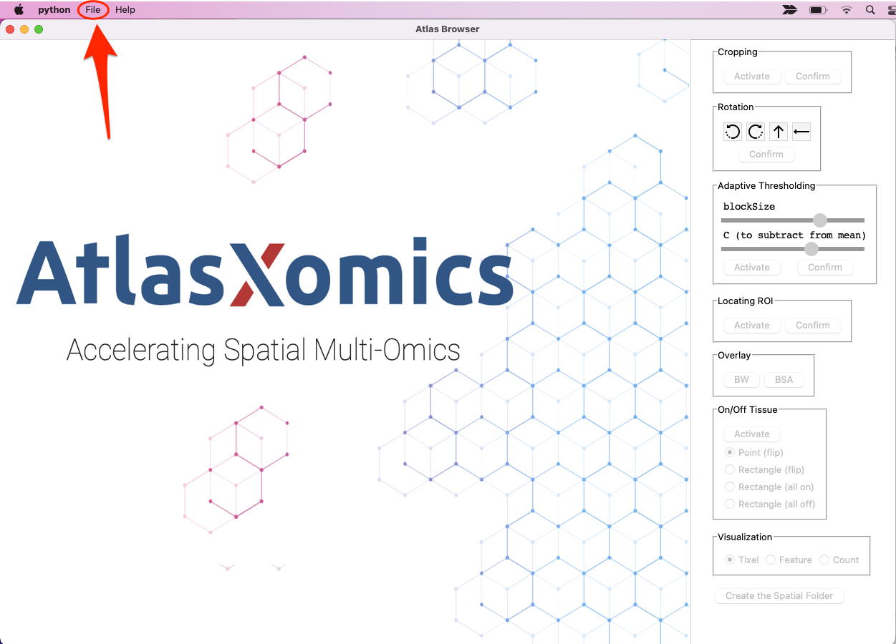
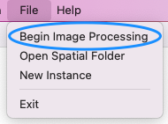

The image which is to be loaded into AtlasXbrowser should be taken following the removal of the B chip
from the glass slide.
While using AtlasXbrowser the user will be prompted to locate the ROI of the image corresponding to the region
in which the A and B chips overlap. This is made much easier by flowing Bovine Serum Albumin (BSA) solution mixed with
fluorescent dye through the outside channels of both the A and B chip. These fluorescent colors will make is visually very
clear where the overlap of the two chips are, it is will be enclosed by this colored square.
Note: We reccomend using two different colors of fluorescent dye on each chip to allow for easy orientation
of the image once it has been rotated.
The two images required for processing are the BSA and postB images.
BSA Image: Image taken with the microscope following the flowing of BSA solution through the outside channels of the chips.
postB Image: Brightfield version of the BSA image, also taken, following the removal of the B-chip.
(Left) The postB image, (Right) the BSA image. Notice how they are the same underlying image. Also note in the
BSA image how the fluorescent staining of two different colors allows for easy identification of proper orientation
following any rotations that may occur from this point on.
To use AtlasXbrowser for image processing, a proper image folder must be prepared.
The folder to be used in the Browser contains both the BSA Image and the postB Image.
While these files can be named whatever the user wants, they two images must be stored within the same folder, we highly reccomend creating a
new folder pertaining this particular run which will store these two images, and the relevant folders and files generated by AtlasXbrowser.
See above how a new folder was created, storing the BSA and postB images to be used by AtlasXbrowser.
In order to begin processing the tissue image, the relevant images must be loaded in.
Navigate to the File tab in the top left corner of the screen.

Select “Begin Image Processing”.

Once selected a pop-up window should appear on screen.
1.) Select File in the first row of the pop-up titled, “Select BSA Image”. Then navigate to the directory
of the image folder, and select the BSA image.
2.) Select File in the second row, labeled “Select postB Image”. Navigate to the image folder, and select the postB image.
3.) Enter the desired name of the run in the textbox.
4.) Select the number of channels on the chips being used. This will either be 50 or 100.
5.) Select the barcode orientation used in the experiment.
6.) Once the images have been loaded in without error, and information entered, select Submit to continue with the image processing.
Upon selecting Submit, the popup should dissapear and the BSA image should be loaded into the main window of the Browser.
This metadata will be saved and stored in the associated Spatial Folder for this experiment.
Now we can proceed to configuring the image.